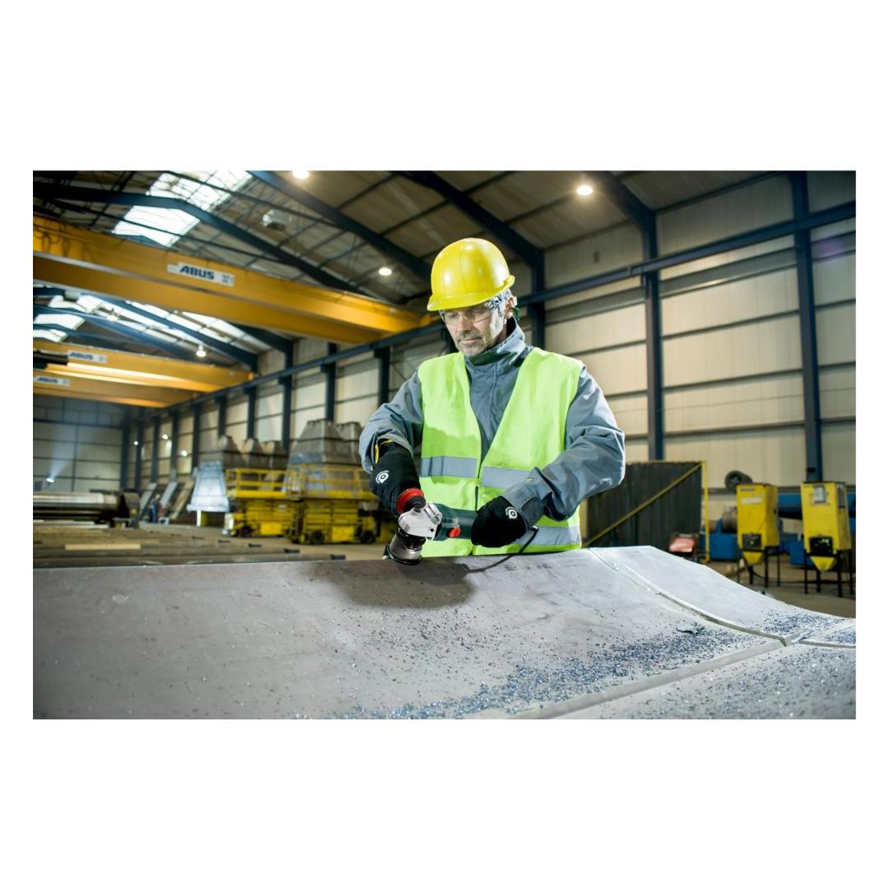
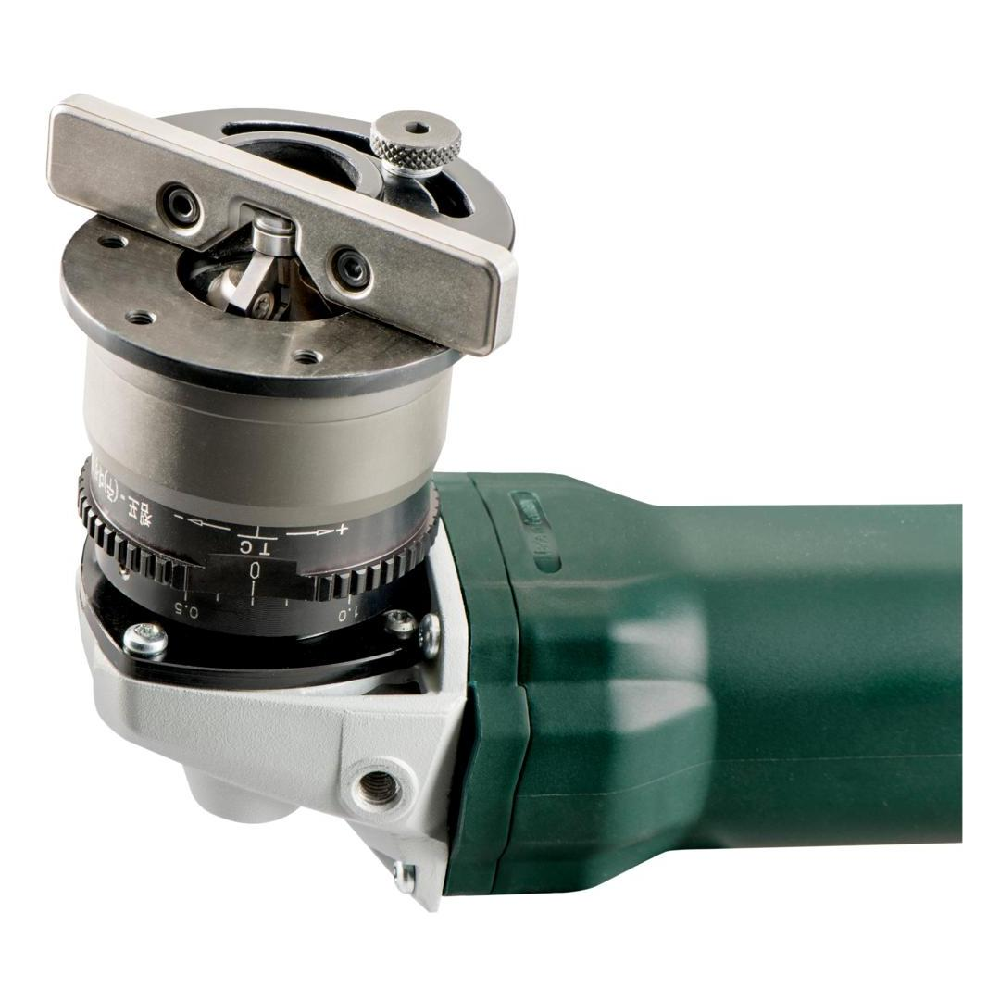
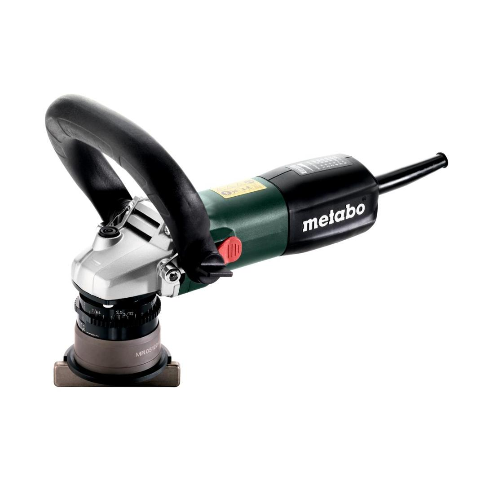
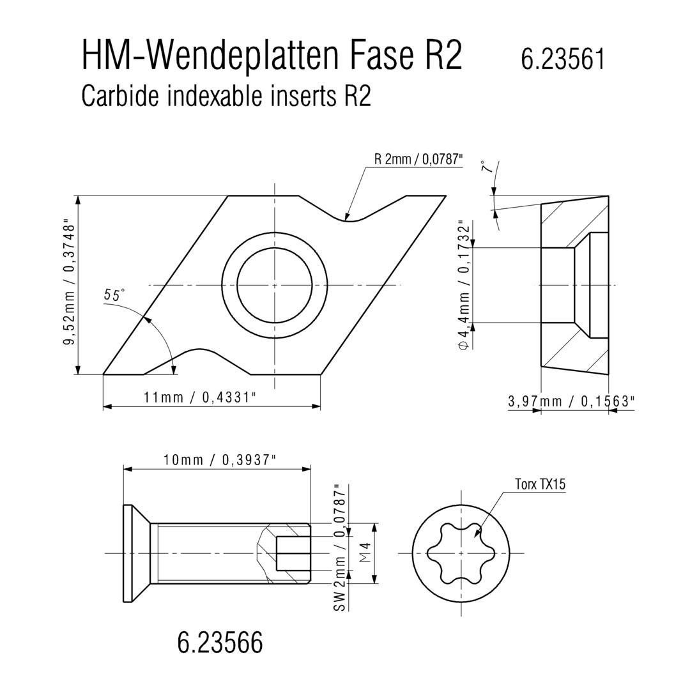
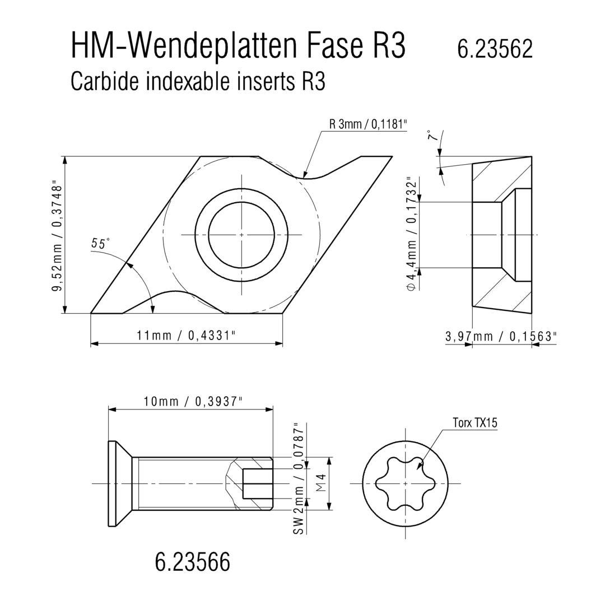

Metabo | Chamfer, Weld Seam Preparation on Flat Surfaces & Pipes
601751700







| Rated input power | 900 W |
| Max. chamfer height at 45° | 4 mm / 5/32 " |
| Possible radii | R2 / R3 |
Product Description
- Compact metal bevelling tool for 45° chamfers and radii of 2 to 3 mm at visible edges
- Surfaces free from oxide and burrs as ideal preparation for the application of powder or paint coatings for maximum protection from corrosion
- One-touch controller: Patented, tool-free setting of the cutting depth in 0.1 steps; stop points for short setting times, and protection against unintentional adjustment of the cutting depth when working
- Slim cutter head with standard carbide indexable inserts and ball-bearing stationary seal ring for working in tubes and in curves
- Guide stop for a uniform finish and high quality surface finish when processing straight edges
- Bail handle adjusts without tools for secure, even guiding
- Metabo Marathon-motor with patented dust protection for long service life
- Thumbwheel controlled Vario-Constamatic (VC)-Full wave electronics ideal for working on materials requiring customised speeds, and at speeds which remain almost constant under load
- Electronic safety shutdown of the motor for safe working in case the tool stops unexpectedly
- Electronic overload protection, soft start and restart protection
- Slim design for ideal handling
- With metaBOX, the intelligent solution for transport and storage
Product Highlights
Metabo Marathon-motorMetabo Marathon-motor
with patented dust protection for long service life
play video Vario-Constamatic (VC)-Full wave electronicsVario-Constamatic (VC)-Full wave electronics
for working at customised speeds to suit the application materials, and speeds that remain almost constant even under load
Restart protectionRestart protection
prevents unintentional start-up after power supply interruption
Electronic soft startElectronic soft start
for smooth start-up
Technical Details
KEY FIGURES| No-load speed | 4500 - 11500 rpm |
| Rated input power | 900 W |
| Output power | 470 W |
| Type of edges | Chamfer and radius |
| Chamfer angles | 45 - 45 ° |
| Max. chamfer width 45° | 6 mm / 1/4 " |
| Max. chamfer height at 45° | 4 mm / 5/32 " |
| Possible radii | R2 / R3 |
| Grading of cutting depth setting | 0.1 mm / 0.00394 " |
| Curves smallest internal Ø | 13 mm |
| Weight (without power cable) | 2.5 kg / 5.5 lbs kg |
| Cable length | 4 m / 13 ft m |
VIBRATION| Vibration | 0.7 m/s² |
| Uncertainty of measurement K | 1.5 m/s² |
NOISE EMISSION| Sound pressure level | 90 dB(A) |
| Sound power level (LwA) | 98 dB(A) |
| Uncertainty of measurement K | 3 dB(A) |
Scope of delivery
| 2 carbide indexable inserts 45° chamfer (ISO: DCMT 11 T 304) |
| 2 Carbide indexable inserts radius R2 |
| 2 Carbide indexable inserts radius R3 |
| Guide Stop |
| Screwdriver for Torx screws 15 |
| Bow-type handle |
| metaBOX 215 |